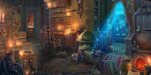
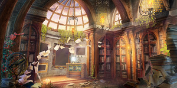

Архив
В этом разделе собраны материалы, распределенные по нескольким категориям.
- Таблицы - Таблицы случайных вещей, сокровищ, событий, слухов и прочего.
- Статьи - Статьи и заметки с советами по проведению Настольных Ролевых Игр.
- Разное - Все остальные материалы.
Таблицы
Вещички
- Безделушки
При создании персонажа вы можете совершить бросок по этой таблице, чтобы получить безделушку — небольшой предмет, немного окутанный тайной. Мастер тоже может использовать эту таблицу. Она поможет заполнить комнаты подземелий и карманы существ. - Что в карманцах?
Партийный вор опять решил проверить карманы прохожих? Что же он там найдет? Вот d100 вариантов мелочей, которые могут оказатья при себе у разных обывателей. - Обычная мебель и предметы
Список из d100 обычных предметов, которые могут находиться в любом доме. - Утварь и личные предметы
Вполне обычные вещи, что найдутся в каждом доме. - Религиозные предметы и мебель
Список из d100 вещей, для святилища или подобного религиозного помещения. - Принадлежности магов
Что можно найти в рабочем кабинете мага? Например, эти d100 предметов. - Содержимое контейнера
Приключенцы нашли очередную таинственную шкатулку или загадочный сосуд? Вот d100 довольно обычных вещей, что там можно найти. - Книги и свитки
В городской библиотеке или в лаборатории мага обязательно наайдется что почитать. Ну или хотя бы посмотреть картинки - Альтернативный список Безделушек для D&D5
Если сотня безделушек из книги игрока D&D5 уже приелась, вот еще d100 вещиц.
Артефакты
- Случайные магические вещи
Несколько таблиц по d100 предметов, которые могут попасться в очередном ссокровище или в магической лавке ближайшего городка.
Сокровища
- Уникальные сокровища
Иногда приключенцам попадаются поистине уникальные вещи. Вот d100 таких вариантов. - Драгоценные камни
Самоцветы в шести таблицах, распределненные по цене. - Произведения искусства
Пять таблиц с предметами, распределенными п оцене. - Немножко сокровищ
d20 необычных ценных сокровищ.
События
- Короткие сценки
Если темп игры просел, можно воспользоваться одним из этих d100 событий для встряски участников игры. - Случаи в порту
Когда партию занесло в приморский город, может произойти какое-нибудь из этих d100 событий. - 666 энкаунтеров
Целых 666 случайных событий истоическо-фентезийной направленности. - Тысяча событий в Москве
Огромная подборка из более чем тысячи случайных событий от самых обычных, до вторжения инопланетян, которые могли бы произойти в современной Москве. - Торговцы на рынке
d20 торговцев на городском рынке. - Сообщения на космическом корабле
d20 сообщений, которые можно получить, бороздя просторы вселенной. - Таинственные пророчества
На рыночной площади, в городском храме или даже во сне можно услышать странное пророчество. Наппример одно из этих d20 предсказаний. - События в космосе
Бороздя просторы всленной можно наткнуться на одно из списка этих d20 вещей. - События на болотах
Порой приключенцев заносит в довольно неожиданные места. Вот d20 энкаунтеров на блотах.
Места
- Комнаты в данже
В подземельях не одни только коридоры со сквозняками да заросшие паутиной комнаты. Если хочется разнообразить очередной данж, вот d20 вариантов. - Разнообразные гробницы
Курган с могилой древнего воина, цитадель лича или склеп архимага, все они могут выглядеть по-разному. Традиционные d20 вариантов. - Пещеры Подземья
Подземье - огромная сеть пещер, что лежит прямо под ногами у жителей поверхности. Это странный и жестокий мир, и там можно встретить какое-нибудь из этих d20 мест. - Портовые города
Если партию занесло на экзотические острва, или они просто отправились на море, они могут зайти в один из этих d20 портов. - Затерянные миры
Остались еще места, где время застыло, где обитают гигантские звери или представители давно забытых цивилизаций. Партия может случайно или не очень попасть в одно из этих d20 мест.
Слухи
- 50 слухов и зацепок
Сидя в таверне и пропивая свежедобытые сокровища группа приключенцев может наслушаться всякого разного. - 20 слухов и зацепок
Еще несколько слухов, что можно услышать в таверне или на рынке. - Слухи на балу аристократов
Приключенцы, приглашенные на собрание аристократии могут услышать что-нибудь из этих d20 слухов. - Слухи о проклятом доме
Этот дом, стоящий особняком на холме за городом всегда окружали нехорошие слухи. Особенно эти d20 слухов.
Эффекты
- Обычные эффекты жезла чудес
У этой волшебной палочки 7 зарядов. Если вы её держите, вы можете действием потратить 1 заряд и выбрать цель в пределах 120 футов. Цель должна быть существом, предметом или точкой в пространстве. Бросьте к100 и определите последствия с помощью таблицы. - Дополнительные эффекты жезла чудес
Когда стандартная сотня эффектов перестанет удивлять, настанет время перейти к новым d100 эффектов. - Смешивание зелий
Персонаж может выпить одно зелье, пока находится под действием другого, или попытаться смешать несколько зелий в одной ёмкости. В этом случае, необычные ингредиенты, используемые в создании зелий, могут привести к непредсказуемым последствиям. - Алхимические промашки
Порою эксперменты в лаборатории заканчивают не очень успешно, это может привести к одному из подобных d100 результатов. - Дикая магия Чародея
Магия чародея исходит от диких сил хаоса, лежащих в основе мироздания. Чародей, возможно, подвергся воздействию грубой магии в той или иной форме. Возможно, она просочилась через портал, ведущий в Лимбо, Стихийные Планы или таинственный Дальний Предел. Может быть, чародей был благословлен могущественной феей или отмечены демоном. Или его магия может быть случайностью при рождении, без очевидной причины. Вне зависимости от еѐ происхождения, хаотическая магия бурлит внутри чародея, готовая вырваться наружу. - Щит Чудес
Щит Чудес - артефакт, вызывающий один из случайных d100 эффектов. - Магические болезни
Кроме обычного насморка и банальной чумы, в мире существует и недуги, связанные с магией.
Статьи
- Альтернативные способы завершить битву
Вольный перевод статьи о том, как завершить битву до того, как все истекут хитпоинтами. - Подготовка к новой игре
Игра получается особенно хорошей, если все участники играют в одно и то же. К сожалению, многие не задумываются об этом, а в книгах с правилами такая важная деталь зачастую пропускается. Слишком часто люди, сами этого не понимая, приходят на игру с разными идеями и это приводит к беспорядку в процессе игры. Поэтому был предложен этот инструмент для выяснения всех деталей ДО начала игры.